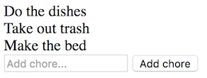
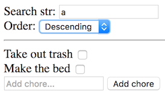

More AngularJS
We're far from done yet!Sandbox tip
Build your own playground
Now that you've started scratching the surface of AngularJS, it can be very helpful to set up an environment where you can do quick small experiments.
Here's the idea - we'll create a folder structure looking like this:
sandbox/
angular.js
_seed/
index.html
code.js
The _seed folder contains a minimal app, meant to be copied whenever we need a new experiments.
The angular.js file is the actual framework that we download from somewhere, for example from here:
https://cdnjs.cloudflare.com/ajax/libs/angular.js/1.6.3/angular.min.js
We could also just link to the online version, or download into node_modules via npm, it doesn't make much difference.
This file we'll now use for all experiments!
Here's the index.html in _seed:
<!DOCTYPE html>
<html lang="en">
<head>
<meta charset="utf-8">
<title>A small Angular app</title>
</head>
<body ng-app="demoApp" ng-controller="mainCtrl">
<p>Hello {{who}}!</p>
<script src="../angular.js"></script>
<script src="code.js"></script>
</body>
</html>
And the code.js file:
var app = angular.module("demoApp",[]);
app.controller("mainCtrl", function($scope){
$scope.who = "world";
});
Now, if you want to do some quick experimenting, you simply copy the _seed folder:
sandbox/
angular.js
_seed/
index.html
code.js
testingsomething/
index.html
code.js
...and now you can easily hack away in the new folder!
Dropdowns
get down with it
So, dropdowns! In regular HTML they are defined like this:
<select>
<option value="id1">Apple</option>
<option value="id2" selected>Pear</option>
<option value="id3">Orange</option>
</select>
Ideally, we'd want to be able to ask select for the current value, just like we do with an input or a checkbox.
But we can't!
The select doesn't have a value. We have to loop over all the option children to find the one with the selected attribute, and read the value attribute from that.
Like animals!
Since this makes selects hard to work with, most frameworks provide an easier way to get the value from a dropdown.
And AngularJS is no different! In AngularJS, we can act as if select has a value, for instance by setting ng-model on it.
Also, AngularJS gives us a syntax for generating the option elements. Here's the old syntax, which uses a unique ng-options directive:
<select ng-model="selectedFruit" ng-options="f.name for f in fruits">
So, the code we just saw...
<select ng-model="selectedFruit" ng-options="f.name for f in fruits">
...why is it more complex than ng-repeat?
Because we need to say two things about each option:
- what
valueshould it have - what text should be displayed
<select ng-model="selectedFruit" ng-options="f.name for f in fruits"></select>
Here the iteration variable will be the value, and the expression before for will be the text.
See this in action in the Select demo.
In version 1.6 we got a nicer syntax where we use regular ng-repeats on option element, together with a new ng-value directive to create the values:
<select ng-model="selectedFruit">
<option ng-repeat="f in fruits" ng-value="f">{{f.name}}</option>
</select>
The text to show is now simply whatever we put inside the repeated option.
See this in action in the Select-new demo.
Oh, and note - regardless of which syntax you use - if you don't initialise the ng-model variable in the controller...
$scope.selectedFruit = $scope.fruits[0];
...we'll get an empty first option in the select.
Filters
including a filter named filter
Remember the debug tip from before?
<pre>{{list | json}}</pre>
So, what is that pipe thing there?! That isn't regular JavaScript!
That's called a filter, and it is a special syntax AngularJS introduced. The filters are really just normal functions.
There are many more filters than json, and now we'll meet two:
- a
orderBy - b
filter
First, orderBy! This is a useful filter to control sorting of a list of objects.
Say we expose this list from the controller:
$scope.list = [
{name: 'David', age: 37},
{name: 'Jacob', age: 30}
]
If we render them in an ng-repeat...
<div ng-repeat="person in list">
{{person.name}}
</div>
...we'll get David first, then Jacob, since that's their order in the list.
But if we use orderBy and pass in 'age' as a parameter:
<div ng-repeat="person in list | orderBy : 'age' ">
{{person.name}}
</div>
...then we get Jacob first, and then David!
(note the weird colon syntax for parameters)
The orderBy filter can also take a second parameter - if that is truthy, then the order will be descending instead. So this...
<div ng-repeat="person in list | orderBy : 'age' : true">
{{person.name}}
</div>
...would mean we get David first again!
Of course, for true power, we could make these parameters dynamic, as in this demo: orderBy
Now for the filter names filter! Can you guess what it does?
That's right, it filters!
If we used the same list as in the previous demo...
$scope.fruits = [
{name:"Apple",tastiness:6},
{name:"Cherry",tastiness:10},
{name:"Strawberry",tastiness:4}
];
...and rendered them like this:
<div ng-repeat="f in fruits | filter: 'rry' ">
{{f.name}} has tastiness level {{f.tastiness}}
</div>
...we'd only see Cherry and Strawberry.
When we pass a string to filter, it will try to match it to every property if the list items objects.
We can also filter for specific properties by passing in an object:
<div ng-repeat="p in persons | filter: {firstName: 'rry'} ">
As before, the true power is of course if we made the filter string dynamic!
Exercise - more dabbling
Cementing the foundation further
Ok - remember the chore app you built earlier?

This is an exercise to cram in dropdowns and filters!
Specifically, we'll add two new pieces of functionality:
- afiltering the list
- bchoose ascending or descending sort
Do them one at a time. The second is the hardest. :)
To allow the user to filter the chore list, you need to...
- add an input field where they can type a search string
- use that search string to filter the list
To create the dropdown, you need to
- expose an array of option objects, one with a reverse prop set to true
- use that array to populate a
select - use the
selectvalue as input to theorderBydirective
When you're done with it all, it should look something like this:

Waitwait - doesn't this mean that we have to use two filters at the same time? We want to have both orderBy and filter on the list we repeat over!
Yes indeed! To add a second filter, simply add another pipe!
<div ng-repeat="i in list | filter1 : argtofilter1 | filter2">
Game evolution
from amoeba to god
Let's apply what we've learned to the game app, and discuss the result!
Specifically, we'll look at three different versions:
- ajQuery
- bHandlebars
- cAngularJS
Our first version used jQuery. Here we had to do the updating ourselves whenever we turn a page.
Next we introduced Handlebars and used it for simpler updating. We're still triggering the update ourselves, however.
Behold the glorious last version, using AngularJS! Note how the ng-click and callback are pretty much the only pieces of logic needed now!
Syntax differences
all the ways to skin a cat
So, behold this simple clicker app...
<div ng-app="myapp" ng-controller="clicker">
{{count}} bottles of beer on the wall
<button ng-click="buyMore()">Buy one more</button>
</div>
...served by this controller:
app.controller("clicker",function($scope){
$scope.count = 3;
$scope.buyMore = function(){
$scope.count++;
}
});
Try it here: clicker controller demo.
You're not going to like this, but there are 4 other ways to express this app!
- ausing controller as syntax
- busing a directive
- cusing a component
- dusing a component class
The controller as syntax is a slight tweak to the first version. Here's the template:
<div ng-app="myapp" ng-controller="clicker as ctrl">
{{ctrl.count}} bottles of beer on the wall
<button ng-click="ctrl.buyMore()">Buy one more</button>
</div>
Note the alias, and how all variables are read off the alias.
The controller attaches stuff to this instead of $scope:
app.controller("clicker",function(){
this.count = 3;
this.buyMore = function(){
this.count++;
}
});
Try it here: clicker controllerAs demo.
We can also encapsulate the app in a directive!
The HTML is then super simple:
<div ng-app="myapp">
<clicker></clicker>
</div>
And here's the code file:
app.directive("clicker", function(){
return {
restrict: "E",
scope: true,
template: `<div>{{count}} bottles of beer etc... (SHORTENED)`,
link: function(scope,elem,attrs){
scope.count = 3;
scope.buyMore = function(){
scope.count++;
}
}
};
});
Try it here: clicker directive
An advantage with directives is that we can easily reuse them in many places:
<div ng-app="myapp">
<clicker></clicker>
<clicker></clicker>
<clicker></clicker>
</div>
Try it here: clicker directive many
Did you notice the scope: true part of the directive definition?
Without that the directive doesn't get it's own scope, which means that all variables end up in the outer scope:
With AngularJS v1.5 they introduced a new concept called component. These are really a slightly simpler version of directives:
app.component("clicker",{
template: `<div>{{$ctrl.count}} bottles of beer.. (SHORTENED)`,
controller: function(){
this.count = 3;
this.buyMore = function(){
this.count++;
}
}
});
Note how...
- the component method receives a definition object directly, instead of a function that returns the definition object.
- the controller is aliased to
$ctrlby default (this can be altered) - it is also possible to use
$scopesyntax as we did originally
Try the component here: clicker component
Finally, as a small variant to the component, we can use a class instead of a function as controller:
app.component("clicker",{
template: `<div>{{$ctrl.count}} bottles of beer.. (SHORTENED)`,
controller: class Clicker {
constructor($scope){
this.count = 3;
};
buyMore(){
this.count++;
};
}
});
Try this here clicker component class
Soooo.... which should we use?

Communication
intercontroller chitchat
We won't go into too much detail, as the topic is (somewhat) advanced.
But I'll show some demos problematising how controllers communicate with each other.
Remember my 'River' feed reader? Last we saw it just listed some posts.
Now we'll introduce topics! The user can select a topic, and then the posts from that topic will be shown.
To handle the topics I'll add new Topic controller.
But here comes the problem: my old Post controller needs access to the selected topic, but that data lives inside the Topic controller!
How do we solve that?
There are (at least) three different solutions:
- anest the controllers
- buse the event system
- cuse a service
The simplest solution is likely to simply place the Post controller inside the Topic controller. Because we can access variables in outer scopes, the post controller can now see the selected topic!
This is however not a good solution. We now have a tight coupling between the controllers, and implicit dependencies between them.
Instead we can use AngularJS event system, that lets us send events between scopes!
That works pretty well! The events are the only connection, but we're now depending on knowing the event names.
An alternative to events is to use a service - a separate singleton object that can be injected into the controllers!
This solution has the added advantage of giving us a good place for the data to live.
A downside is added complexity, since we needed to build a subscribe system.
Exercise - Quiz
New exercise
Here's one last exercise! It doesn't add anything new, instead it is meant to cement our existing templating skills.
We're going to build a quiz!
Here are the vague specs from the client:
- It should show a series of questions
- Each question has several answer options, of which only one is correct
- After the last question your score is shown
No more details available!
Here's a suggested battleplan:
- start with deciding what the data looks like
- create a quiz according to that format
- then build the template and test it with a question
- now add the logic to go between questions
- finally introduce the score mechanism
Was this too easy? Find ways to improve the quiz and make it more interesting! :)